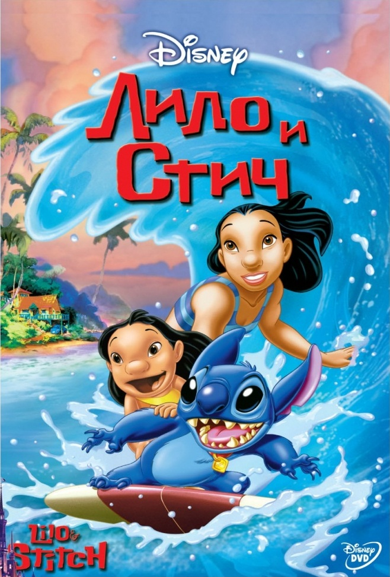

<!DOCTYPE html>
<html lang="en">
<head>
</body>
</html
    <meta charset="UTF-8">
    <meta name="yandex-verification" content="d35986582629ab7e" />
    <meta http-equiv="X-UA-Compatible" content="IE=edge">
    <meta name="viewport" content="width=device-width, initial-scale=1.0">
    <title>Document</title>
    <link rel="stylesheet" href="style.css">
</head>
<body>
    <header>
        
    <nav><a href="" class="link"></a>
        <a href="" class="link"></a>
        <a href="" class="link"></a>
        <a href="" class="btn">Open</a>
    </nav>
</header>
    <main><div class="block">
        
        <div class="text">
   
        <h2>Немного о мультфильме "Лило и Стич"</h2>
            <p>«Ли́ло и Стич» (англ. Lilo & Stitch) — 42-й полнометражный мультфильм студии
            Уолта Диснея в жанре научно-фантастической комедийной драмы 2002 года. 
            Режиссёрами и сценаристами картины стали Крис Сандерс и Дин Деблуа, а
            Сандерс также озвучил главного героя — инопланетянина по имени Стич.
            Другие роли озвучили Дэйви Чейз, Тиа Каррере, Дэвид Огден Стайерс, 
            Кевин Макдональд, Винг Рэймс и Джейсон Скот Ли. Это один из трёх 
            мультипликационных фильмов компании (вместе с «Мулан» и «Братцем медвежонком»),
            произведённый «Disney’s Hollywood Studios» в Орландо, штат Флорида. 
            В центре сюжета сбежавший из заключения инопланетянин-разрушитель
            Стич — результат незаконных экспериментов сумасшедшего учёного Джамбы.
            Космический корабль Стича терпит крушение на Гавайских островах, 
            где инопланетянин оказывается в семье девочки Лило и её старшей сестры
            Нани — Лило удаётся перевоспитать маленького монстра и стать одной 
            дружной
             «оханой».</p>
            <h2> На чем основан сюжет?</h2>
            <p>Сюжет основан на истории,
            придуманной Сандерсом 
            в 1980-е годы для детской книги —
            дизайн персонажей и окружающей 
            среды придуман Сандерсов.
            Премьера картины состоялась
            16 июня 2002 года, а в широкий
            прокат фильмы вышел 21 июня.
            Мультфильм получил положительные отзывы
            критиков и зрителей, оценивших юмор,
            очарование и оригинальность проекта. 
            В рекламной кампании картины с бюджетом
            $80 миллионов акцент делался на странной,
            нестандартной для студии истории и персонажах —
            в итоге фильм собрал по всему миру более $273 миллионов.
            «Лило и Стич» получил номинацию на 75-й церемонии
            вручения премии «Оскар» как «Лучший анимационный
            фильм». Фильм стал одним из самых успешных проектов
            студии в 2000-х годах после ренесанса компании Уолта Диснея,
            и позволил запустить целую франшизу — сразу на видео
            вышли 3 продолжения, анимационный сериал, 
            а также спин-оффы «Стич!» и «Стич и Аи».
            В разработке находится игровой ремейк.</p>
        </div>
    </div></main>
   
    <footer></footer>
</body>
</html>
